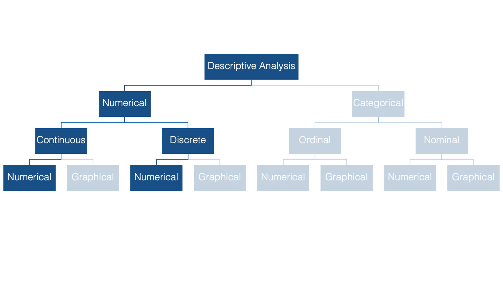
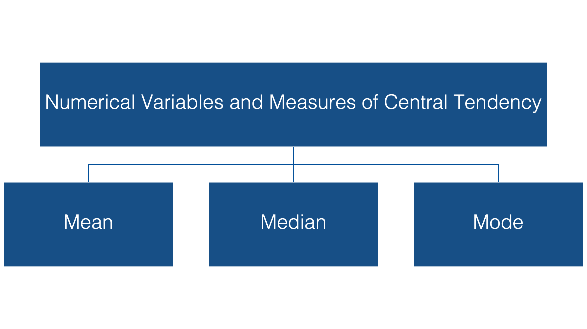
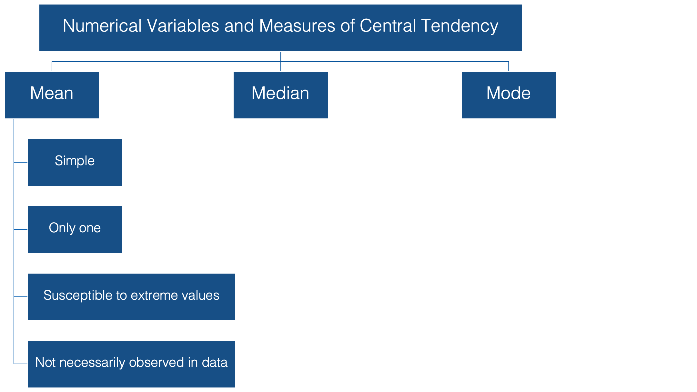
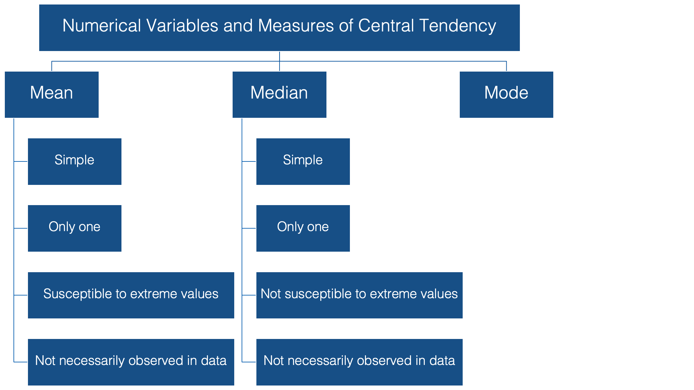
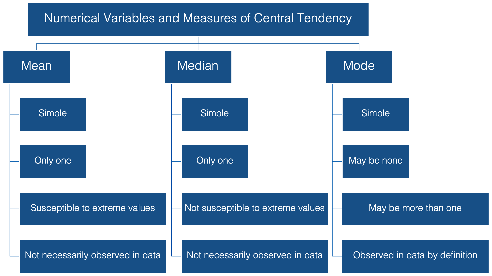

20 Measures of Central Tendency
In previous sections you’ve seen methods for describing individual categorical variables. Now we’ll switch over to numerically describing numerical variables.
In epidemiology, we often want to describe the “typical” person in a population with respect to some characteristic that is recorded as a numerical variable – like height or weight. The most basic, and probably most commonly used, way to do so is with a measure of central tendency.
In this chapter we’ll discuss three measures of central tendency:
- The mean
- The median
- The mode

Now, this is not a statistics course. But we will briefly discuss these measures and some of their characteristics below to make sure that we’re all on the same page when we discuss the interpretation of our results.
The mean

When we talk about the typical, or “average”, value of some variable measured on a continuous scale, we are usually talking about the mean value of that variable. To be even more specific, we are usually talking about the arithmetic mean value. This value has some favorable characteristics that make it a good description of central tendency.
👍 For starters it’s simple. Most people are familiar with the mean, and at the very least, have some intuitive sense of what it means (no pun intended).
👍 In addition, there can be only one mean value for any set of values.
However, there are a couple of potentially problematic characteristics of the mean as well:
👎 It’s susceptible to extreme values in your data. In other words, a couple of people with very atypical values for the characteristic you are interested in can drastically alter the value of the mean, and your estimate for the typical person in your population of interest along with it.
👎 Additionally, it’s very possible to calculate a mean value that is not actually observed anywhere in your data.
Note
The sample mean is often referred to as \(\bar{x}\), which pronounced “x bar.”
The median

The median is probably the second most commonly used measure of central tendency. Like the mean, it’s computationally simple and relatively straightforward to understand. 👍 There can be one, and only one, median. 👍 And, its value may also be unobserved in the data.👎
However, unlike the mean, it’s relatively resistant to extreme values. 👍 In fact, when the median is used as the measure of central tendency, it’s often because the person conducting the analysis suspects that extreme values in the data are likely to distort the mean.
The mode

And finally, we have the mode, or the value that is most often observed in the data. It doesn’t get much simpler than that. 👍 But, unlike the mean and the median, there can be more than one mode for a given set of values. In fact, there can even be no mode if all the values are observed the exact same number of times.👎
However, if there is a mode, by definition it’s observed in the data.👍
Now that we are all on the same page with respect to the fundamentals of central tendency, let’s take a look at how to calculate these measures using R.
20.1 Calculate the mean
Calculating the mean is really straightforward. We can just use base R’s built-in mean() function.
# Load the dplyr package. We will need several of dplyr's functions in the
# code below.
library(dplyr)# Simulate some data
height_and_weight_20 <- tribble(
~id, ~sex, ~ht_in, ~wt_lbs,
"001", "Male", 71, 190,
"002", "Male", 69, 177,
"003", "Female", 64, 130,
"004", "Female", 65, 153,
"005", NA, 73, 173,
"006", "Male", 69, 182,
"007", "Female", 68, 186,
"008", NA, 73, 185,
"009", "Female", 71, 157,
"010", "Male", 66, 155,
"011", "Male", 71, 213,
"012", "Female", 69, 151,
"013", "Female", 66, 147,
"014", "Female", 68, 196,
"015", "Male", 75, 212,
"016", "Female", 69, 19000,
"017", "Female", 66, 194,
"018", "Female", 65, 176,
"019", "Female", 65, 176,
"020", "Female", 65, 102
)👆 Here’s what we did above:
We loaded the
tibblepackage so that we could use itstribble()function.We used the
tribble()function to simulate some data – heights and weights for 20 hypothetical students.The
tribble()function creates something called a tibble. A tibble is thetidyverseversion of a data frame. In fact, it is a data frame, but with some additional functionality. You can use the link to read more about it if you’d like.We used the
tribble()function instead of thedata.frame()function to create our data frame above because we can use thetribble()function to create our data frames in rows (like you see above) instead of columns with thec()function.Using the
tribble()function to create a data frame isn’t any better or worse than using thedata.frame()function. You should just be aware that it exists and is sometimes useful.
mean(height_and_weight_20$ht_in)[1] 68.4👆 Here’s what we did above:
We used base R’s
mean()function to calculate the mean of the column “ht_in” from the data frame “height_and_weight_20”.Note: if you just type
mean(ht_in)you will get an error. That’s because R will look for an object called “ht_in” in the global environment.However, we didn’t create an object called “ht_in”. We created an object (in this case a data frame) called “height_and_weight_20”. That object has a column in it called “ht_in”.
So, we must specifically tell R to look for the “ht_in” column in the data frame “height_and_weight_20”. Using base R, we can do that in one of two ways:
height_and_weight_20$ht_inorheight_and_weight_20[["ht_in"]].
20.2 Calculate the median
Similar to above, we can use base R’s median() function to calculate the median.
median(height_and_weight_20$ht_in)[1] 68.5👆 Here’s what we did above:
- We used base R’s
median()function to calculate the median of the column “ht_in” from the data frame “height_and_weight_20”.
20.3 Calculate the mode
Base R does not have a built-in mode() function. Well, it actually does have a mode() function, but for some reason that function does not return the mode value(s) of a set of numbers. Instead, the mode() function gets or sets the type or storage mode of an object. For example:
mode(height_and_weight_20$ht_in)[1] "numeric"This is clearly not what we are looking for. So, how do we find the mode value(s)? Well, we are going to have to build our own mode function. Later in the book, we will return to this function and walk through how to build it one step at a time. For now, just copy and paste the code into R on your computer. Keep in mind, as is almost always the case with R, this way of writing this function is only one of multiple possible ways.
mode_val <- function(x) {
# Count the number of occurrences for each value of x
value_counts <- table(x)
# Get the maximum number of times any value is observed
max_count <- max(value_counts)
# Create and index vector that identifies the positions that correspond to
# count values that are the same as the maximum count value: TRUE if so
# and false otherwise
index <- value_counts == max_count
# Use the index vector to get all values that are observed the same number
# of times as the maximum number of times that any value is observed
unique_values <- names(value_counts)
result <- unique_values[index]
# If result is the same length as value counts that means that every value
# occured the same number of times. If every value occurred the same number
# of times, then there is no mode
no_mode <- length(value_counts) == length(result)
# If there is no mode then change the value of result to NA
if (no_mode) {
result <- NA
}
# Return result
result
}mode_val(height_and_weight_20$ht_in)[1] "65" "69"👆 Here’s what we did above:
We created our own function,
mode_val(), that takes a vector (or data frame column) as a value to its “x” argument and returns the mode value(s) of that vector.We can also see that the function works as expected when there is more than one mode value. In this case, “65” and “69” each occur 4 times in the column “ht_in”.
20.4 Compare mean, median, and mode
Now that you know how to calculate the mean, median, and mode, let’s compare these three measures of central tendency. This is a good opportunity to demonstrate some of the different characteristics of each that we spoke about earlier.
height_and_weight_20 %>%
summarise(
min_weight = min(wt_lbs),
mean_weight = mean(wt_lbs),
median_weight = median(wt_lbs),
mode_weight = mode_val(wt_lbs) %>% as.double(),
max_weight = max(wt_lbs)
)# A tibble: 1 × 5
min_weight mean_weight median_weight mode_weight max_weight
<dbl> <dbl> <dbl> <dbl> <dbl>
1 102 1113. 176. 176 19000👆 Here’s what we did above:
We used the
mean()function,median()function, and ourmode_val()function inside of dplyr’ssummarise()function to find the mean, median, and mode values of the column “wt_lbs” in the “height_and_weight_20” data frame.We also used the
as.double()function to convert the value returned bymode_val()– “176” – from a character string to a numeric double. This isn’t strictly necessary, but does look better.Finally, we used base R’s
min()andmax()functions to view the lowest and highest weights in our sample.
20.5 Data checking
Do you see any red flags 🚩as you scan the results? Do you really think a mean weight of 1,113 pounds sounds reasonable? This should definitely be a red flag for you. Now move your gaze three columns to the right and notice that the maximum value of weight is 19,000 lbs – an impossible value for a study in human populations. In this case the real weight was supposed to be 190 pounds, but the person entering the data accidentally got a little trigger-happy with the zero key.
This is an example of what was meant by “We can use descriptive analysis to uncover errors in our data” in the Introduction to descriptive analysis chapter. Often times, for various reasons, some observations for a given variable take on values that don’t make sense. Starting by calculating some basic descriptive statistics for each variable is one approach you can use to try to figure out if you have values in your data that don’t make sense.
In this case we can just go back and fix our data, but what if we didn’t know this value was an error? What if it were a value that was technically possible, but very unlikely? Well, we can’t just go changing values in our data. It’s unethical, and in some cases illegal. Below, we discuss the how the properties of the median and mode can come in handy in situations such as this.
20.6 Properties of mean, median, and mode
Despite the fact that this impossibly extreme value is in our data, the median and mode estimates are reasonable estimates of the typical person’s weight in this sample. This is what we mean when we say that the median and mode are more “resistant to extreme values” than the mean.
You may also notice that no person in our sample had an actual weight of 1,112.75 (the mean) or even 176.5 (the median). This is what we we mean when we say that the mean and median values are “not necessarily observed in the data.”
In this case, the mode value (176) is also a more reasonable estimate of the average person’s weight than the mean. And unlike the mean and the median, participants 18 and 19 actually weigh 176 pounds. This is not to say that the mode is always the best measure of central tendency to use. However, you can often learn useful information from your data by calculating and comparing these relatively simple descriptive statistics on each of your numeric variables.
20.7 Missing data
In numerical descriptions of categorical variables we saw that we could use the dplyr::filter() function to remove all the rows from our data frame that contained a missing value for any of our variables of interest. We learned that this is called a complete case analysis. This method should pretty much always work, but in this section, you will see an alternative method for dropping missing values from your analysis that you are likely to come across often when reading R documentation – the na.rm argument.
Many R functions that perform calculations on numerical variables include an na.rm – short for “Remove NA” – argument. By default, this argument is typically set to FALSE. By passing the value TRUE to this argument, we can perform a complete case analysis. Let’s quickly take a look at how it works.
We already saw that we can calculate the mean value of a numeric vector using the mean() function:
mean(c(1, 2, 3))[1] 2But, what happens when our vector has a missing value?
mean(c(1, NA, 3))[1] NAAs you can see, the mean() function returns NA by default when we pass it a numeric vector that contains a missing value. It can be confusing to understand why this is the case. The logic goes something like this. In R, an NA doesn’t represent the absence of a value – a value that doesn’t exist at all; rather, it represents a value that does exist, but is unknown to us. So, if you were asked to give the mean of a set of numbers that contains 1, some unknown number, and 3 what would your answer be? Well, you can’t just give the mean of 1 and 2. That would imply that the unknown number doesn’t exist. Further, you can’t really give any numeric answer because that answer will depend on the value of the missing number. So, the only logical answer to give is something like “I don’t know” or “it depends.” 🤷 That is essentially what R is telling us when it returns an NA.
While this answer is technically correct, it usually isn’t very satisfying to us. Instead, we often want R to calculate the mean of the numbers that remain after all missing values are removed from the original set. The implicit assumption is that the mean of that reduced set of numbers will be “close enough” to the mean of the original set of numbers for our purposes. We can ask R to do this by changing the value of the na.rm argument from FALSE – the default – to TRUE.
mean(c(1, NA, 3), na.rm = TRUE)[1] 2In this case, the mean of the original set of numbers (2) and the mean of our complete case analysis (2) are identical. That won’t always be the case.
Finally, let’s compare using filter() and na.rm = TRUE in a dplyr pipeline. We will first use the replace() function to add some missing values to our height_and_weight_20 data.
height_and_weight_20 <- height_and_weight_20 %>%
mutate(ht_in = replace(ht_in, c(1, 2), NA)) %>%
print()# A tibble: 20 × 4
id sex ht_in wt_lbs
<chr> <chr> <dbl> <dbl>
1 001 Male NA 190
2 002 Male NA 177
3 003 Female 64 130
4 004 Female 65 153
5 005 <NA> 73 173
6 006 Male 69 182
7 007 Female 68 186
8 008 <NA> 73 185
9 009 Female 71 157
10 010 Male 66 155
11 011 Male 71 213
12 012 Female 69 151
13 013 Female 66 147
14 014 Female 68 196
15 015 Male 75 212
16 016 Female 69 19000
17 017 Female 66 194
18 018 Female 65 176
19 019 Female 65 176
20 020 Female 65 102👆Here’s what we did above:
- Replaced the 1st and 2nd value of
ht_inwithNA(missing) using thereplace()function.
Here’s what our results look like when we don’t perform a complete case analysis.
height_and_weight_20 %>%
summarise(
min_height = min(ht_in),
mean_height = mean(ht_in),
median_height = median(ht_in),
mode_height = mode_val(ht_in),
max_height = max(ht_in)
)# A tibble: 1 × 5
min_height mean_height median_height mode_height max_height
<dbl> <dbl> <dbl> <chr> <dbl>
1 NA NA NA 65 NAHere’s what our results look like when we use the filter() function.
height_and_weight_20 %>%
filter(!is.na(ht_in)) %>%
summarise(
min_height = min(ht_in),
mean_height = mean(ht_in),
median_height = median(ht_in),
mode_height = mode_val(ht_in),
max_height = max(ht_in)
)# A tibble: 1 × 5
min_height mean_height median_height mode_height max_height
<dbl> <dbl> <dbl> <chr> <dbl>
1 64 68.2 68 65 75And, here’s what our results look like when we change the na.rm argument to TRUE.
height_and_weight_20 %>%
summarise(
min_height = min(ht_in, na.rm = TRUE),
mean_height = mean(ht_in, na.rm = TRUE),
median_height = median(ht_in, na.rm = TRUE),
mode_height = mode_val(ht_in),
max_height = max(ht_in, na.rm = TRUE)
)# A tibble: 1 × 5
min_height mean_height median_height mode_height max_height
<dbl> <dbl> <dbl> <chr> <dbl>
1 64 68.2 68 65 75As you can see, both methods give us the same result. The method you choose to use will typically just come down to personal preference.
20.8 Using meantables
In the sections above, we learned how to use dplyr functions to calculate various measures of central tendency for continuous variables. However, there can be a fair amount of code writing involved when using those methods. The more we have to repeatedly type code, the more tedious and error-prone it becomes. This is an idea we will return to many times in this book. Luckily, the R programming language allows us to write our own functions, which solves both of those problems.
Later in this book, you will be shown how to write your own functions. For the time being, we suggest that you install and use the meantables package. The meantables package is basically an enhanced version of the code we wrote in the sections above. We designed it to help us quickly make tables of descriptive statistics for continuous variables, and it’s specifically designed to work in a dplyr pipeline.
Like all packages, you need to first install it…
# You may be asked if you want to update other packages on your computer that
# meantables uses. Go ahead and do so.
install.packages("meantables")And then load it…
# After installing meantables on your computer, you can load it just like you
# would any other package.
library(meantables)Now, let’s use the mean_table() function from meantables package to rerun our analysis from above.
height_and_weight_20 %>%
filter(!is.na(ht_in)) %>%
mean_table(ht_in)# A tibble: 1 × 9
response_var n mean sd sem lcl ucl min max
<chr> <int> <dbl> <dbl> <dbl> <dbl> <dbl> <dbl> <dbl>
1 ht_in 18 68.2 3.28 0.774 66.6 69.8 64 75👆Here’s what we did above:
We used
filter()to keep only the rows that have a non-missing value forht_inand passed the data frame on to themean_table()function using a pipe.We told the
mean_table()function to create a table of summary statistics for the variableht_in. This is just an R data frame of useful statistics about a single continuous variable.The summary statistics in the table above include:
response_var: The name of the variable (column) we are analyzing.n: The number of non-missing values ofresponse_varbeing analyzed in the current analysis.mean: The mean of allnvalues ofresponse_var.sem: The standard error of the mean of allnvalues ofresponse_var.lcl: The lower (95%, by default) confidence limit for the percentagemean.ucl: The upper (95%, by default) confidence limit for the percentagemean.min: The minimum value ofresponse_var.max: The maximum value ofresponse_var.
We will continue using the meantables package at various points throughout the book. You will also be shown some other cool things we can do with meantables. For now, all you need to know how to do is use the mean_table() function to calculate basic descriptive statistics for single continuous variables.